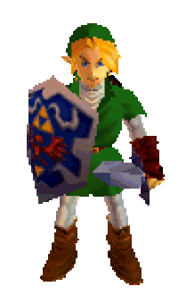

Video games I love

Legend of Zelda
Pokemon
Life is strange
❮
❯
❮
❯


![Long before the events of Skyward Sword, the earth cracked and evil forces rushed out of the fissure.These forces attacked the people of the earth, slaughtering them and destroying their land. They did this in search of the Triforce, the ultimate power capable of granting any wishes of its holder. This power, passed down by the Golden Goddesses, was guarded by The Goddess Hylia, the goddess of the land. The Goddess Hylia gathered the Triforce and the remaining survivors onto a piece of earth and sent it skyward beyond the clouds. This piece of land came to be known as Skyloft. With the humans safe, The Goddess Hylia joined the land dwellers and fought the evil forces in a war of unmatched scale and ferocity. The Goddess Hylia eventually sealed the evil forces away, restoring peace to the Surface. However, the humans remained in Skyloft, as The Goddess Hylia knew that the seal on the evil would not hold forever. The Goddess Hylia knew that she would be powerless to stop the forces for a second time, so she required the use of the Triforce to defeat them again. However, a goddess cannot use the Triforce, so The Goddess Hylia gave up her immortality and was reincarnated as a mortal Hylian. Skyward Sword's in-game story establishes itself as the first game in the known Zelda timeline, exploring the beginning of the battle between good and evil within the legend, and establishing its key players: Zelda, as the incarnation of the Goddess Hylia, Link, the hero chosen by the Goddesses, and Ganondorf, as the manifestation of the Demon King Demise's hatred.](Images/ss.webp)
![The game starts with Link and Zelda in the sanctuary of a blade known as the Four Sword that had sealed away the evil Wind Mage, Vaati. Link draws the sword, releasing Vaati, who then kidnaps Zelda. Upon drawing the sword, Link splits into four heroes in variously colored tunics, working together to save Zelda. The object of the game is to complete levels and receive the multiple silver keys from the Fairies at the end of each level. Once a key is obtained from each of the three main levels, Vaati's Palace appears. Link travels through the palace and defeats Vaati, sealing the Wind Mage back into the Four Sword.](Images/Fsa_link.webp)
![Princess Zelda tells Link of her prophetic dreams, explaining that she had actually seen him come from the forest and break through a veil of darkness, accompanied by a Fairy guide and bearing the Kokiri's Emerald. She also warns him about Ganondorf, the man clad in black whom Zelda believes is symbolized by the dark clouds of her dreams, and his evil intention to steal the Triforce of legend from the Sacred Realm. With the power of the goddesses, his desire to subjugate the world would be realized. In order to do this, Ganondorf would require not only the three Spiritual Stones of Hyrule, but also the mystical Ocarina of Time. Zelda insists that Link track down the other two Spiritual Stones, so that they might beat Ganondorf to the Triforce and put an end to his wicked ingenious plot. Here, he soon meets Impa, the loyal attendant of Zelda and a member of the Sheikah.](Images/Young_link_and_adult_link_by_legend_tony980-d4ebyg1.webp)